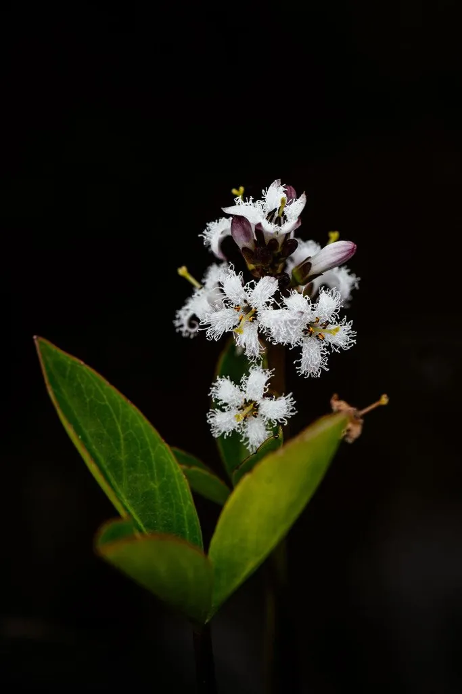

水生植物 · 植物界
睡菜 Menyanthes trifoliata

睡菜科多年生水生草本，三出复叶挺出水面，白色花冠内侧密生流苏状毛，是北方沼泽湿地的常见植物，全草可入药。
- 分类
- 门被子植物门纲木兰纲目杜鹃花目科睡菜科属睡菜属
- 栖息环境
- 沼泽、泥炭地、池塘边缘的浅水处，喜凉爽、向阳的酸性水体
- 地理分布
- 北半球温带与寒带广布，中国东北、华北、西南高原及欧洲、北美均有分布
- 保护级别
- 暂无评估；栖息地沼泽退化使局部种群减少
物种志
睡菜为睡菜科睡菜属多年生水生草本，具粗壮的横走根状茎，横生于水底泥中。叶为三出复叶，叶柄长 20–30 厘米，挺出水面，小叶椭圆形或倒卵形，长 5–10 厘米，全缘或微波状，形似菜豆叶。花葶自叶腋抽出，总状花序密生白色花，花冠五裂，内侧密布流苏状长毛，花期 5–7 月；蒴果球形，种子多数。
睡菜广布于北半球温带与寒带的沼泽、泥炭地，中国东北、华北和西南高原都有分布，常成片生长在富含腐殖质的浅水中，适宜水深 10–30 厘米，喜凉爽气候与充足光照。它的根状茎富含淀粉，历史上曾在荒年磨粉充饥，但因味苦且含轻微毒性成分，须反复浸泡漂洗；全草入药，有安神、健脾之效，民间煮水治失眠，故名“睡菜”。如今睡菜更多作为湿地生态指示植物与沼泽景观植物，在泥炭沼泽保护中具有重要意义。
形态与习性
- 株高叶柄挺水高 20–30 厘米，花葶略高于叶
- 水深适宜水深 10–30 厘米，可生于湿泥中
- 水质喜酸性、贫营养的清洁水体，耐低温
- 花期5–7 月，花冠内侧密生白色流苏
- 繁殖以根状茎分株繁殖，也可播种
- 主要用途湿地景观、全草入药、沼泽生态指示
趣味知识
- 睡菜的花冠内侧长满流苏状白毛，这是它区别于其他湿地草本的重要特征。
- 睡菜全草含睡菜苦苷等成分，少量入药可安神，过量则引起恶心呕吐，不可自行采食。
- 睡菜是泥炭沼泽的典型指示植物，成片出现往往说明水体酸性且贫营养。
- 它的根状茎富含淀粉，北欧与东北民间曾在饥荒时反复浸泡后磨粉食用。